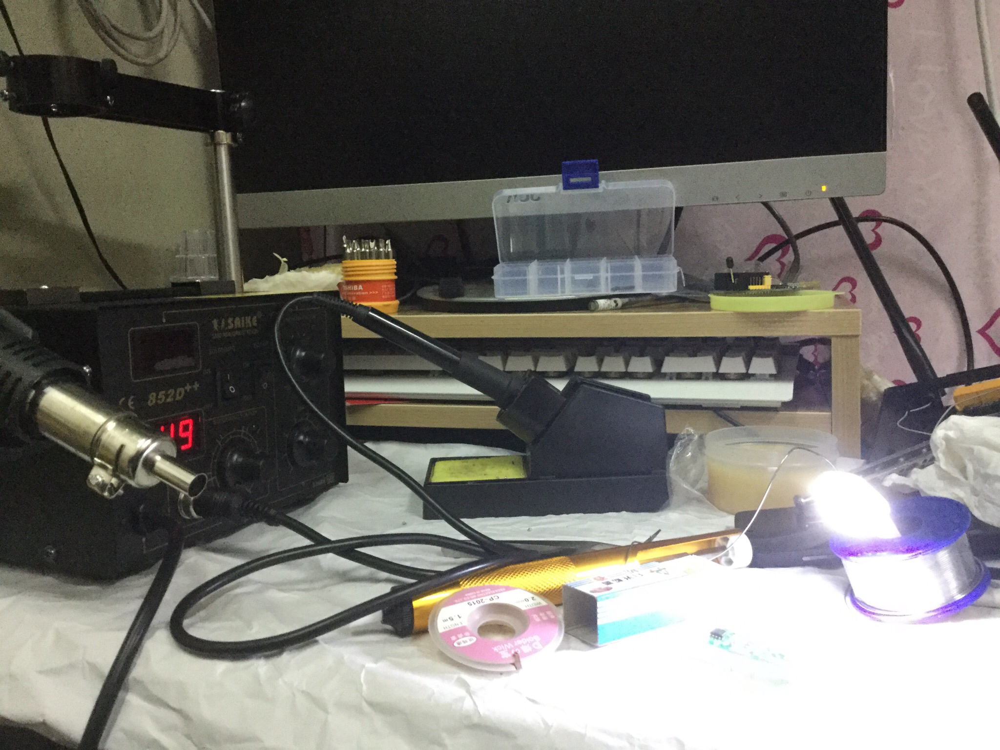
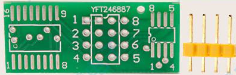
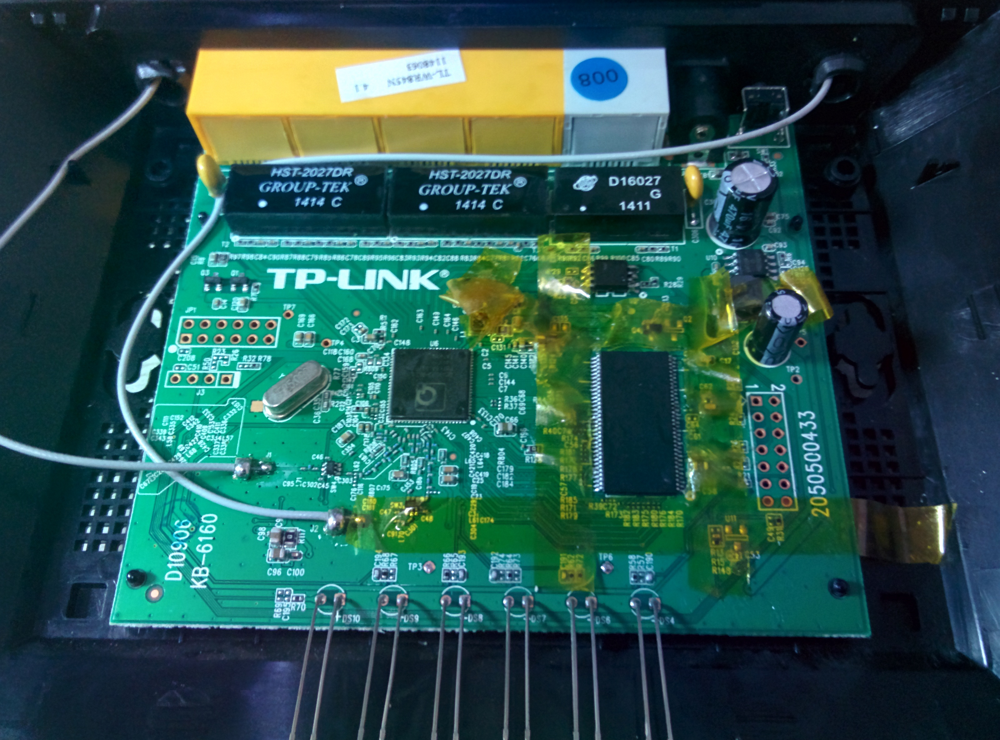
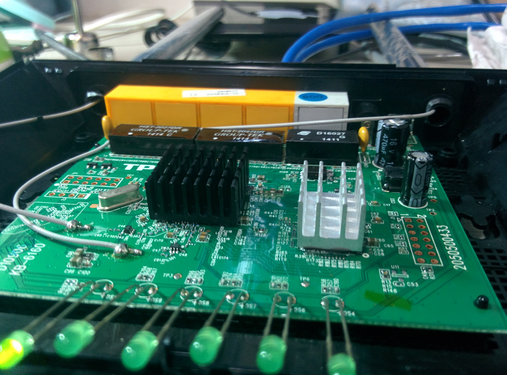
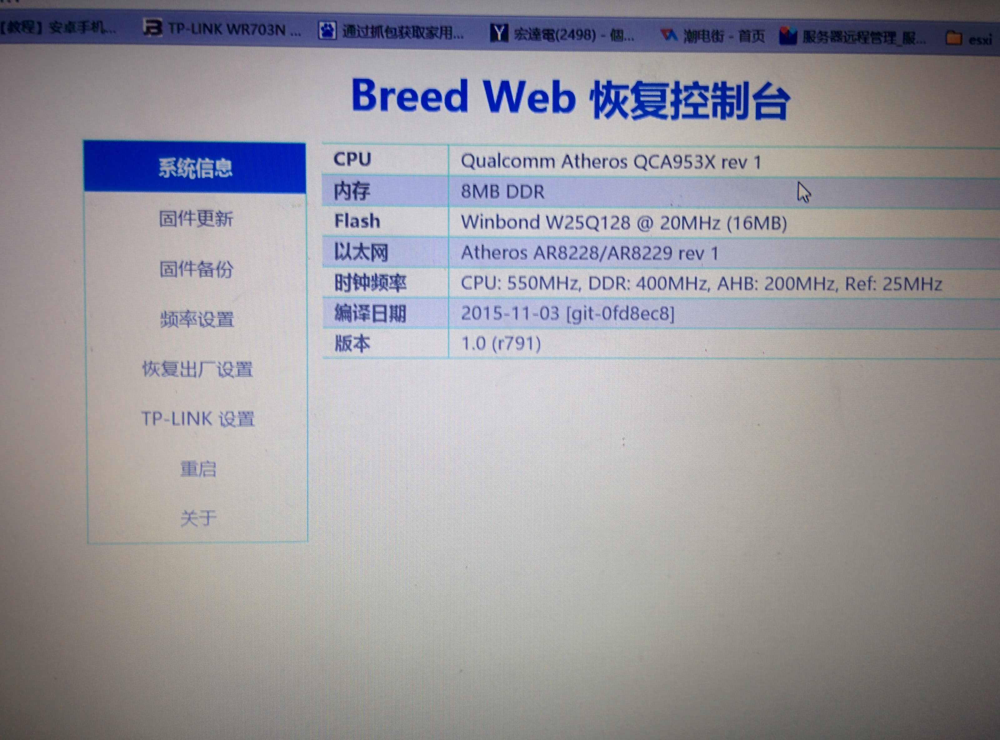
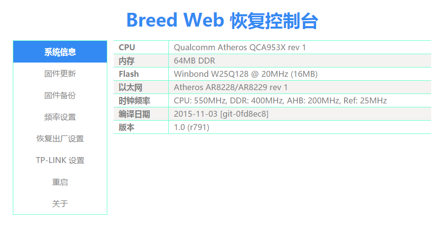
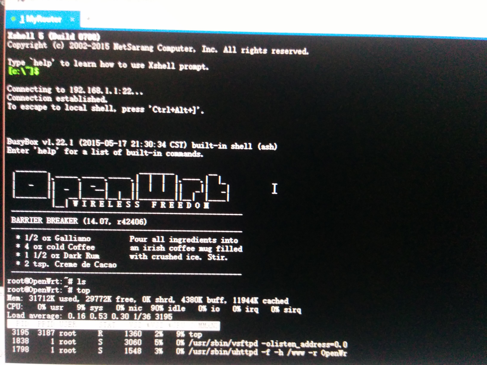
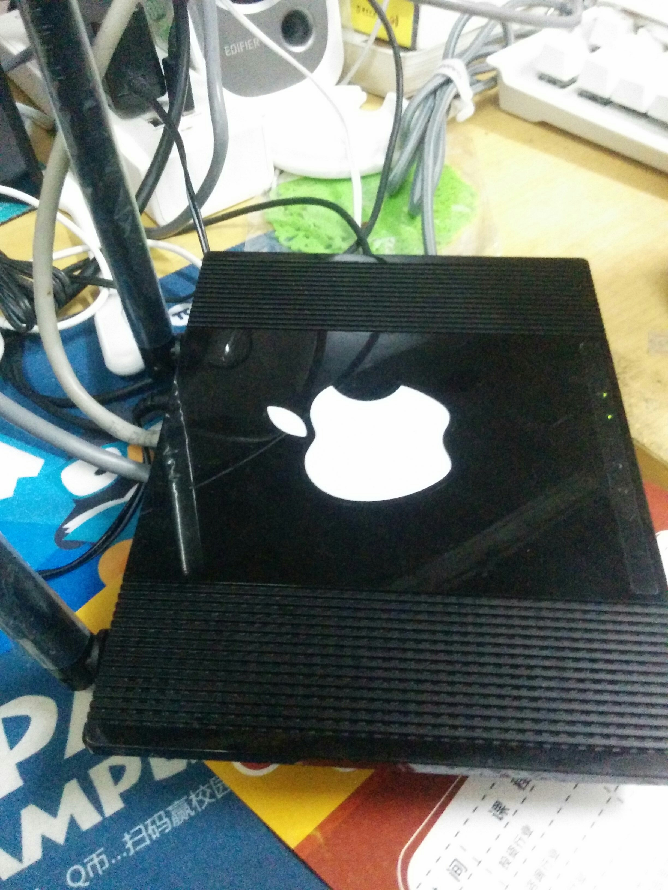

前言
最近社团多了一个新工具，热风焊台，于是我来练手改装路由器（以前从来没学过这方面的知识）

准备
设备: TP-Link WR845N v4
 硬件工具: 热风焊台，恒温内热烙铁（尖头，刀头）。CH341A编程器，SOP 8/16转接板，吸锡带，吸锡器，助焊剂，松香，镊子，锡丝，隔热胶带。
配件:
Winbond(华邦) 16MB 128MBIT SPI FLASH
内存颗粒 HY5DU121622CTP-D43 DDR64M16位
系统环境：Windows 10，CH341A编程器软件
硬件工具: 热风焊台，恒温内热烙铁（尖头，刀头）。CH341A编程器，SOP 8/16转接板，吸锡带，吸锡器，助焊剂，松香，镊子，锡丝，隔热胶带。
配件:
Winbond(华邦) 16MB 128MBIT SPI FLASH
内存颗粒 HY5DU121622CTP-D43 DDR64M16位
系统环境：Windows 10，CH341A编程器软件
硬件改造要点
拆闪存
首先给热风枪装上1cm的出风口，把热风枪温度调到265度，风速6。然后预热路由器主板，接着对着闪存吹，大概十几秒后闪存引脚上的锡变亮，说明锡熔化了，用镊子把它取下。
拆内存
首先用隔热胶带贴住周围，保护零件，用助焊剂涂满内存颗粒两边引脚，给引脚上锡，一边拖焊一边用镊子顶住左边，力向上，不要太大力，否则焊盘会被扯下。拖焊的时候把烙铁头温度调到380度，轻轻来回滑动碰引脚，让上面的锡变成液态，这样一边就被镊子顶起来了。另一边也这样做。
焊杜邦头
烙铁头温度调到350度，根据闪存与插孔的走线，把杜邦头插在SOP转接板上，用烙铁头贴着杜邦头接触点，用锡点一下，就焊上去了。

焊闪存
把闪存焊在SOP转接板上，闪存上面有圆点的那一面对着电路板上有缺口的那一面

焊内存
把内存与焊盘对齐，圆点的那一面对着电路板上有缺口的那一面，对称的两角用锡固定，然后加锡拖焊，可能是我的锡有问题，最后总是连锡，也是因为这个问题，让我焊上去又取下来，导致一个板子焊盘掉了许多。解决办法：用吸锡带或者用细针把锡清理干净。
失败图：

成功图：

加个散热片

操作流程


先拆闪存，用编程器备份原有的固件，因为里面有art，这里面有无线相关的参数，每台机器的配置都有略微不同，很重要。 然后再下载对应芯片的Bootloader写入16MB的闪存，这里用的Bootloader是Hackpascal大神的Breed。 写入之后焊在主板上。启动，插入网线，用浏览器打开192.168.1.1。

然后替换内存，再启动，如果虚焊或者连锡，加电后led会一直全亮。 这里可以看到内存变成64MB了。

然后进Breed刷入PandoraBox和ART，这里我刷的是Hackpascal编译的Openwrt，假如没有备份art，可以是用Hackspecial提供的art。

贴上水果的logo，perfect！
